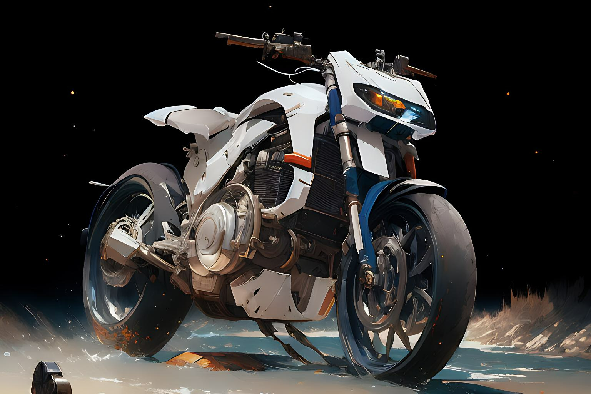

AKIRA
"AKIRA" es una película de animación japonesa de 1988 dirigida por Katsuhiro Otomo, basada en su propio manga del mismo nombre. AKIRA La película se desarrolla en una distópica Neo-Tokio en el año 2019, después de una devastadora explosión nuclear que destruyó la ciudad en 1988..
La trama se centra en dos amigos, Kaneda y Tetsuo, que se encuentran involucrados en un plan gubernamental en la ciudad de Gran Tokio la cual es recorrida en una futurista, iconica y enérgica moto..
La mision es: "En AKIRA MOTOS, nuestros productos, brindan a nuestros clientes experiencias únicas y emocionantes en el camino".
Diferenciales
- Atención personalizada a los clientes
- Espacio diferenciado
- Localización
- Profesionalismo
